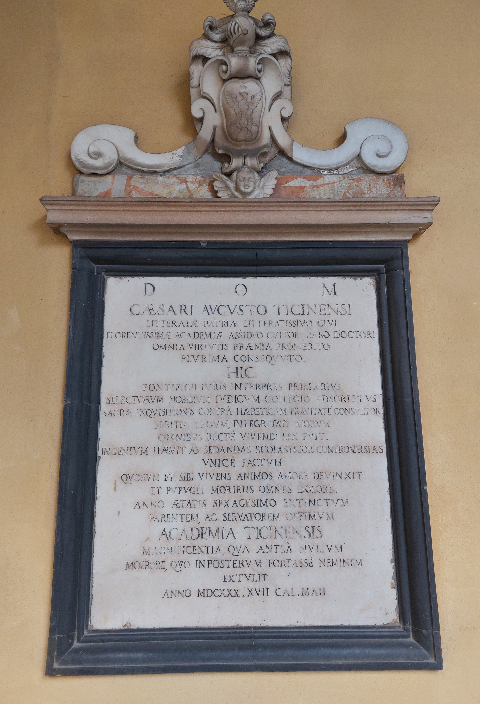

Ruolo: Giurista e Interprete del Diritto Pontificio (1570-1630)

"A Dio Ottimo Massimo. A Cesare Agosti Ticinesi, cittadino della patria letterata, assiduo frequentatore e eccezionale dottore di questa fiorentissima Università, che meritò tutti i premi della virtù e ne conseguì moltissimi. Qui fu interprete principale del diritto pontificio, ascritto al collegio dei nobili giudici scelti, consultore della Sacra Inquisizione contro l'eretica depravazione. Per la competenza nelle leggi e l'integrità dei costumi, fu per tutti una legge del vivere rettamente. Ebbe un' indole per sedare le controversie scolastiche in maniera unica, dalla quale da vivo legò a sè gli animi con amore, e morendo afflisse tutti con dolore. Spentosi a sessant'anni, ottimo padre e difensore (delle leggi), L'università di Pavia lo celebrò con una magnificenza mai vista prima e con un dolore che forse nessuno proverà in futuro. Nell'anno 1630, il giorno prima delle Calende di maggio. "
"To God, Most Good, Most Great. To Cesare Agosti Ticinesi, a citizen of the literate homeland, a constant devotee and exceptional doctor of this most flourishing University, who deserved all the rewards of virtue and attained very many of them. Here he was the main interpreter of pontifical law, enrolled in the college of chosen noble judges, counselor of the Sacred Inquisition against heretical depravity. Through his expertise in the law and the integrity of his morals, he was to all a rule for living rightly. He had a talent for settling scholastic controversies in a unique way, through which, while alive, he bound souls to himself with love and by dying he afflicted all with sorrow. Having passed away at the age of sixty, an excellent father and defender (of the law), the University of Pavia celebrated him with a magnificence never seen before and with a grief that perhaps no one will feel again. In the year 1630, on the day before the Kalends of May."